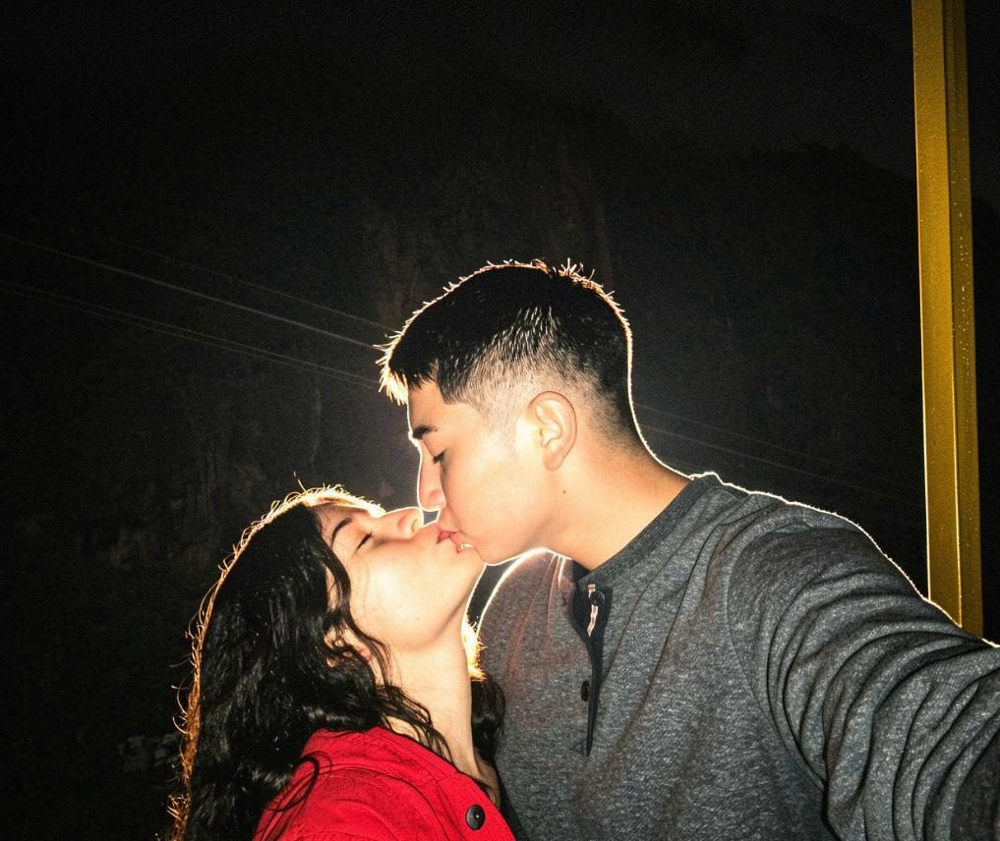
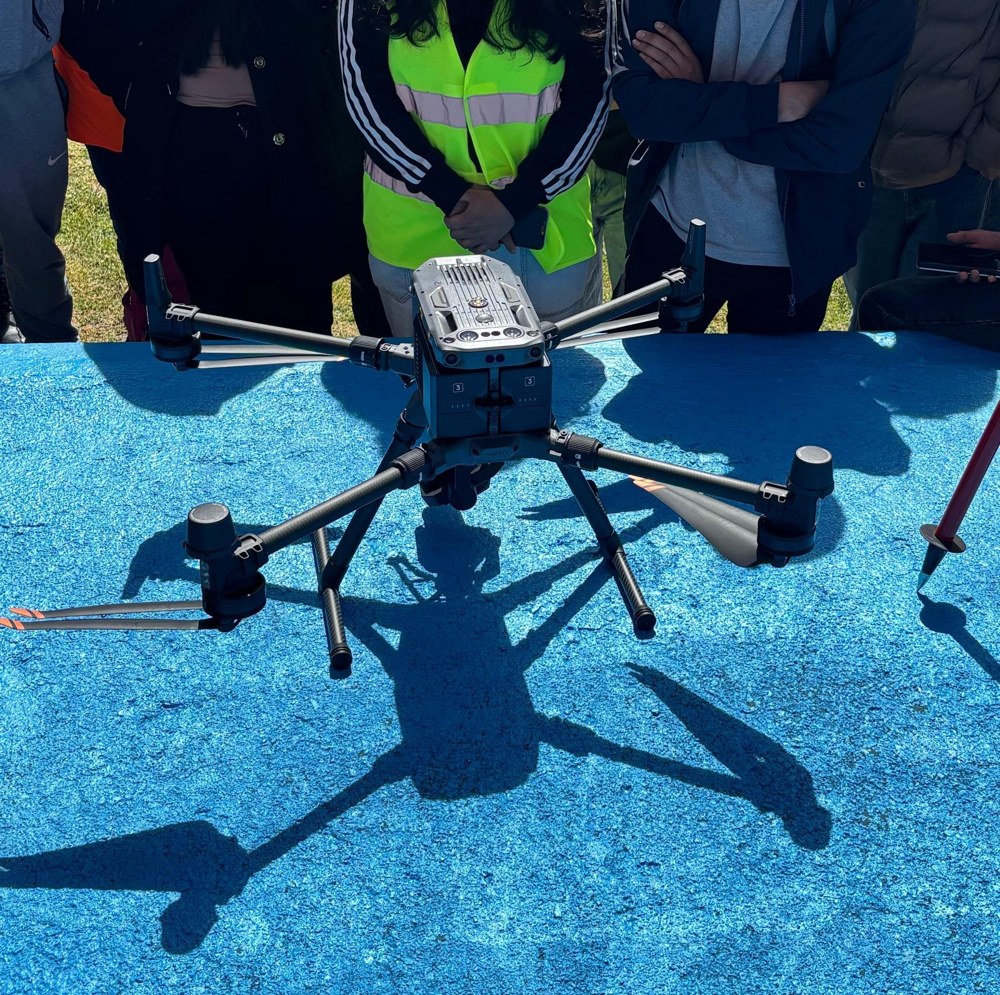
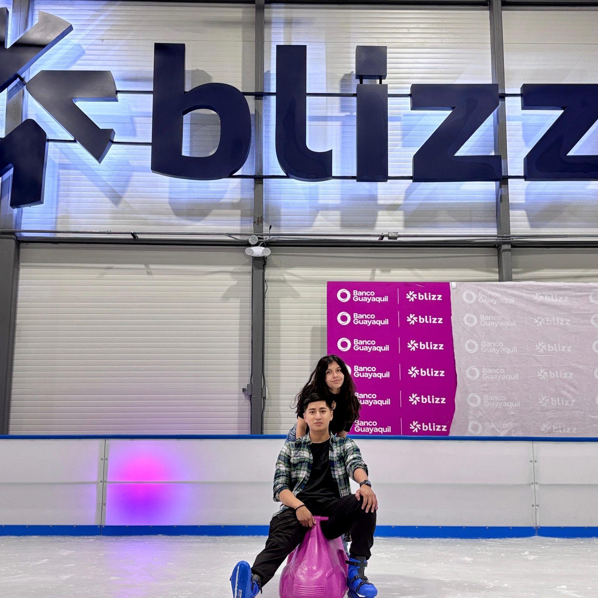
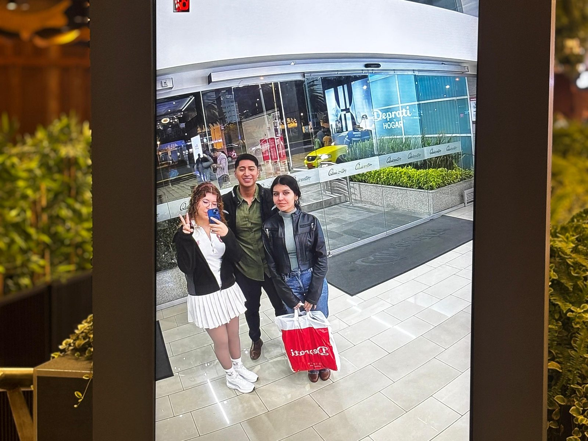
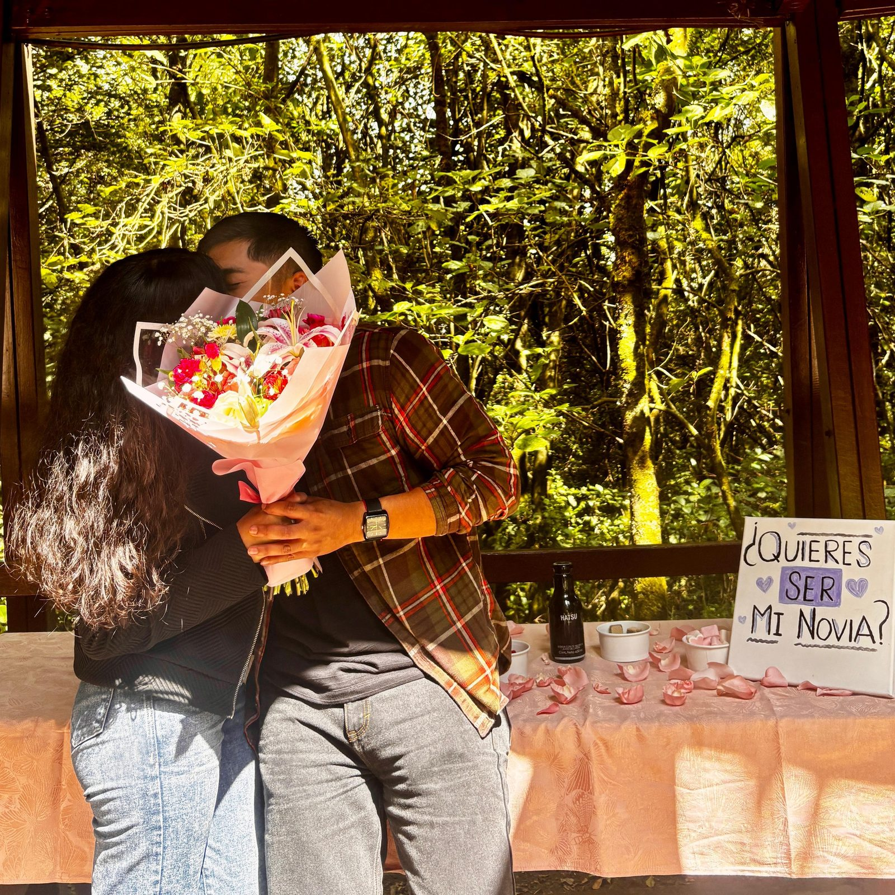
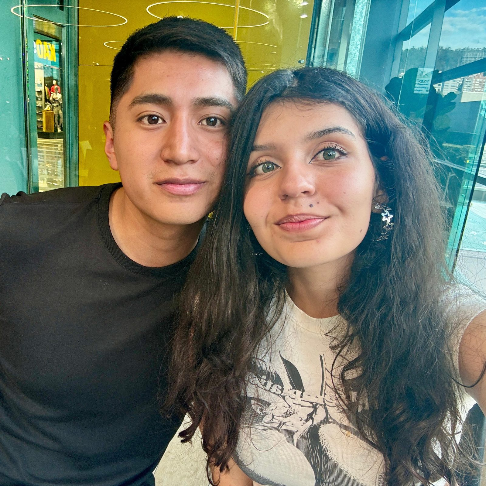
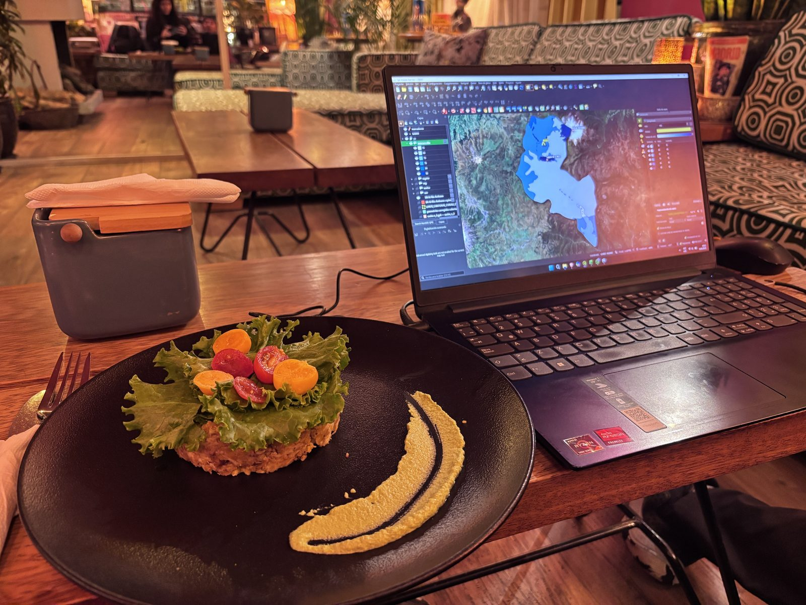
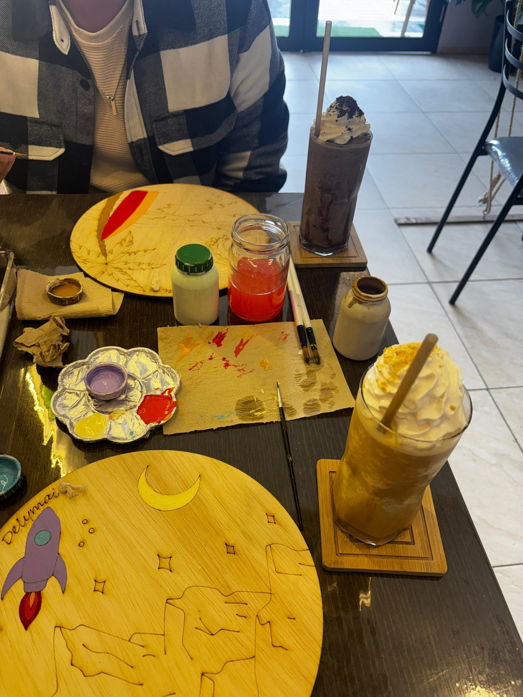
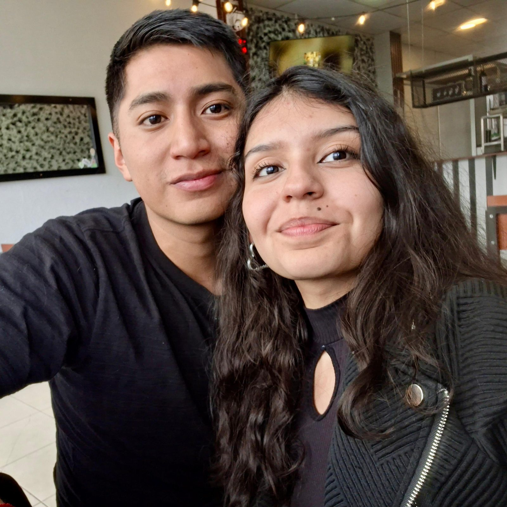
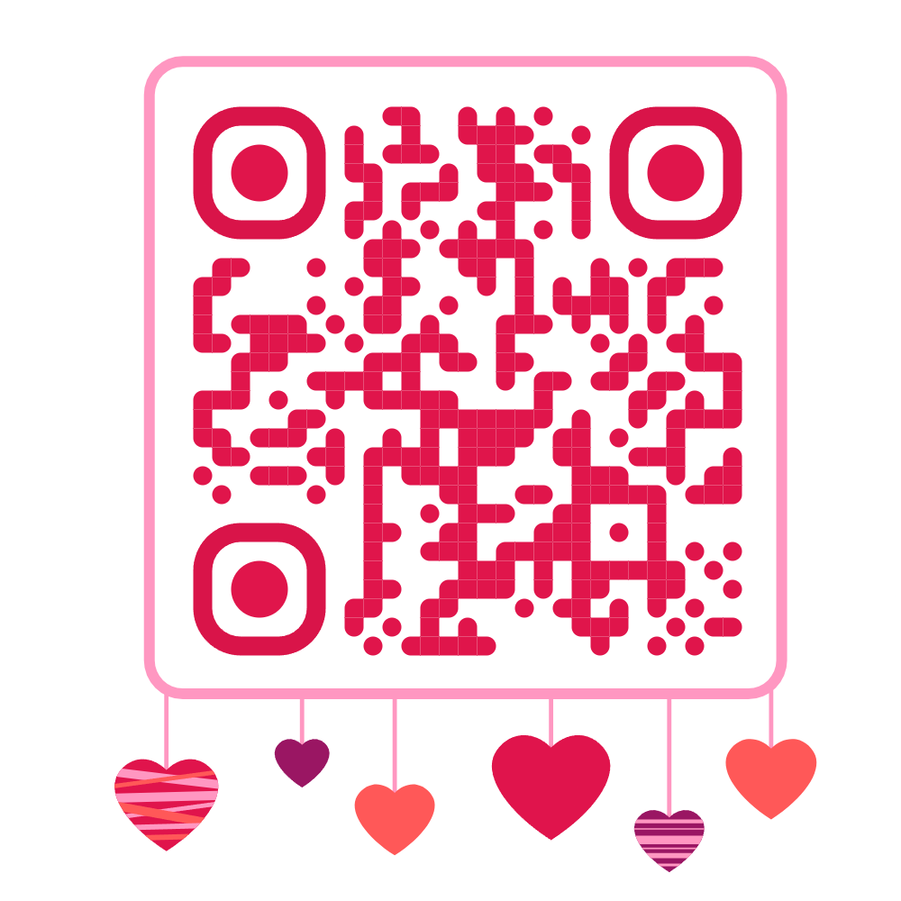

Preparando nuestra historia...
Para Elizabeth
Desde el 24 de abril
Hecho especialmente para ti ❤️

Hay instantes que pasan desapercibidos, pequeños destellos que el tiempo se lleva sin piedad. Pero otros, sin saberlo, se convierten en el centro de gravedad de tu existencia. Aquel día, en medio de la universidad, nuestros caminos se cruzaron sin que nadie lo planeara. No sabía que aquella persona se convertiría en el eje de mi día a día. Fue una casualidad que terminó marcando un antes y un después en mi vida.
Y así, sin saberlo, comenzó nuestra historia.

Te conocí en una práctica de Topografía. No fue un flechazo de esos instantáneos que se cuentan en las películas. Ese día te vi tan concentrada en lo que hacías, tan metida en lo tuyo, que me llamó la atención de una forma que no supe explicar en el momento. Y desde que te vi así, entregada a lo que hacías, no dejé de fijarme en ti. No hubo un segundo después de eso en el que dejara de notarte.
Fuiste mi distracción hecha propósito, y mi casualidad convertida en costumbre.

Sentí un capricho que no pude ignorar: nadie me había llamado tanto la atención, y tenía que ser ella. Empecé a escribirte, y cada mensaje se sentía como descubrir un rincón nuevo tuyo que quería seguir explorando. Luego llegó la primera cita: patinar. No recuerdo la fecha exacta, pero sí la sensación de verte reír cada vez que te resbalabas y volvías a levantarte sin dejar de sonreír. Después vinieron los desayunos: uno en Tierra Verde, otro en la universidad, y las tardes que se nos iban entre risas sin darnos cuenta. Y aquella tarde pintando esos cuadritos, mientras esperábamos las notas de Topografía, fue cuando lo entendí: quería hacer las cosas bien, porque quería que fueras tú.
Ese día decidí que quería hacer las cosas bien, contigo.

Llegaron las vacaciones y con ellas la distancia. Los días sin verte se hicieron más largos de lo que esperaba, pero eso no cambió nada. Al contrario, a pesar de la distancia siempre mantuve el interés y las ganas de estar contigo. Cuando volvimos a vernos quedó claro que no había sido solo un capricho pasajero. Empezamos a salir más seguido, y cada cita se sentía como una razón más para seguir eligiendo esto.
La distancia no cambió nada, solo confirmó lo que ya sabía.

Y un 24 de abril todo cambió. A pesar del tropiezo de ese día, no se podía negar el destino que nos esperaba: ese fue el momento en que decidimos dejar de ser 'yo' y 'tú' para convertirnos en 'nosotros'. Desde entonces, entre los altibajos de la universidad, los exámenes y las risas, hemos construido algo que vale cada segundo. Algo que no cambiaría por todo el oro del mundo. No ha sido un camino de rosas, pero cada espina ha merecido la pena por tenerla a mi lado.
“Y aquí estamos, escribiendo nuestra historia, juntos.”
Toca cada punto para ver por qué importa
Mis fotos favoritas




Las que se me venían a la mente sin buscarlas
Razón, de Los Caligaris
La que mejor explica por qué contigo hasta los días grises se ven bonitos
Agua, de Jarabe de Palo
La escuchaba y no podía dejar de pensar en ti
El lado oscuro, de Jarabe de Palo
Otra que simplemente me hacía pensar en ti, sin más explicación
“Cada día a tu lado es un regalo que no esperaba merecer.”
Mi amor bella, si estás leyendo esto, es porque estas a punto de terminar la página que preparé para ti. Espero que te haya gustado. Mientras la hacía, me di cuenta de algo: por más fotos que encontrara, por más videos que pusiera o por más detalles que recordara, había una parte de nuestra historia que simplemente no cabía ahí.
Hace algún tiempo empecé a escribir. No porque quisiera hacer un regalo como este, ni porque pensara que algún día alguien más lo iba a leer. Lo hacía porque había días en los que sentía demasiado y no quería que el tiempo terminara borrándolo. Entonces escribía. A veces después de llegar a mi casa, otras antes de dormir, otras cuando algo me hacía pensar mucho en nosotros. Era mi forma de guardar esos momentos antes de que se mezclaran con los siguientes.
Con el tiempo quise escribir muchas más. Me imaginaba llenando una carpeta entera con cartas para ti, una por cada etapa que fuéramos viviendo. Pero la universidad, el trabajo, el estrés... la vida misma e incluso nosotros mismos jaja. Hicieron que no siempre pudiera hacerlo. Durante un tiempo me dio pena, porque sentía que te estaba quedando debiendo muchas palabras. Después entendí que no era así. Las cartas que vas a leer no intentan resumir nuestra historia. Para eso ya está la página que acabas de ver. Lo que hacen es algo diferente: guardan lo que pasaba por mi cabeza mientras esa historia ocurría. Son pensamientos escritos en momentos distintos, sin saber que algún día terminarían juntos. Por eso algunas son más felices, otras más desordenadas, otras incluso contradictorias. Nunca las corregí ni las reescribí. Preferí dejarlas exactamente como salieron ese día, porque así también cuentan cómo fui cambiando mientras te iba conociendo.
Siempre he pensado que la memoria es injusta. Con los años uno empieza a olvidar detalles, conversaciones o la intensidad con la que llegó a sentir ciertas cosas. Yo no quería olvidar cómo se sentía quererte al principio. Quería poder volver a esos días y recordar qué estaba pensando, qué me preocupaba, qué me hacía sonreír o qué me quitaba el sueño. Sin darme cuenta, terminé escribiendo pequeños pedazos de nosotros.
Tal vez, cuando leas algunas cartas, encuentres ideas que hoy escribiría diferente. Es normal. Las personas si cambiamos mi amor. Pero hay algo que nunca cambiaría, y es la razón por la que las escribí. Todas nacieron del mismo lugar: de las ganas de conservar algo que para mí era demasiado valioso como para dejarlo únicamente en la memoria. No quiero que leas estas páginas como si fueran cartas de amor de un romantico empedernido, aunque en eso me has convertido mi amor. Quiero que las leas como si, por un momento, pudieras entrar en mi cabeza y acompañarme en cada uno de esos días. Porque muchas de las cosas que vas a encontrar ahí nunca las dije en voz alta. Algunas porque no encontraba las palabras, otras porque pensé que no eran tan importantes y otras simplemente porque se quedaron conmigo. Hoy quiero que también sean tuyas. Ojalá que, cuando termines de leerlas, no recuerdes las palabras exactas que escribí. Ojalá recuerdes cómo me sentía cuando las escribía. Porque, al final, eso era lo único que quería conservar.
Si alguna vez te preguntaste qué estaba pensando mientras vivíamos nuestra historia, aquí empieza la respuesta.
En lugar de estudiar vías pero con todo mi amor,
Alejandro.
A 3 días de tu cumpleaños. Y en nuestros 3 meses.
23/07/2026
Sino te tengo a ti - Hombres G
No solo quiero recordar lo que fuimos, sino construir lo que seremos
Todavía no sé qué va a pasar aquí. No tengo la foto, ni la fecha exacta, ni las palabras precisas, porque este capítulo no lo he vivido todavía. Puede ser un viaje, una graduación, una tarde cualquiera de un martes sin nada especial. Lo único que sé con certeza es que quiero escribirlo contigo, a tu lado, sin apuro, página por página.
El resto de la historia lo escribimos juntos.
Toca una estrella y descubre un pensamiento
No siempre voy a poder estar cerca, pero quería que supieras todo lo que pienso, aunque no te lo diga cada día.

Gracias por dejarme ser parte de tu vida.
Esto es solo una forma de decirte todo lo que significas para mí.
Te amo.
Con amor, Alejandro.